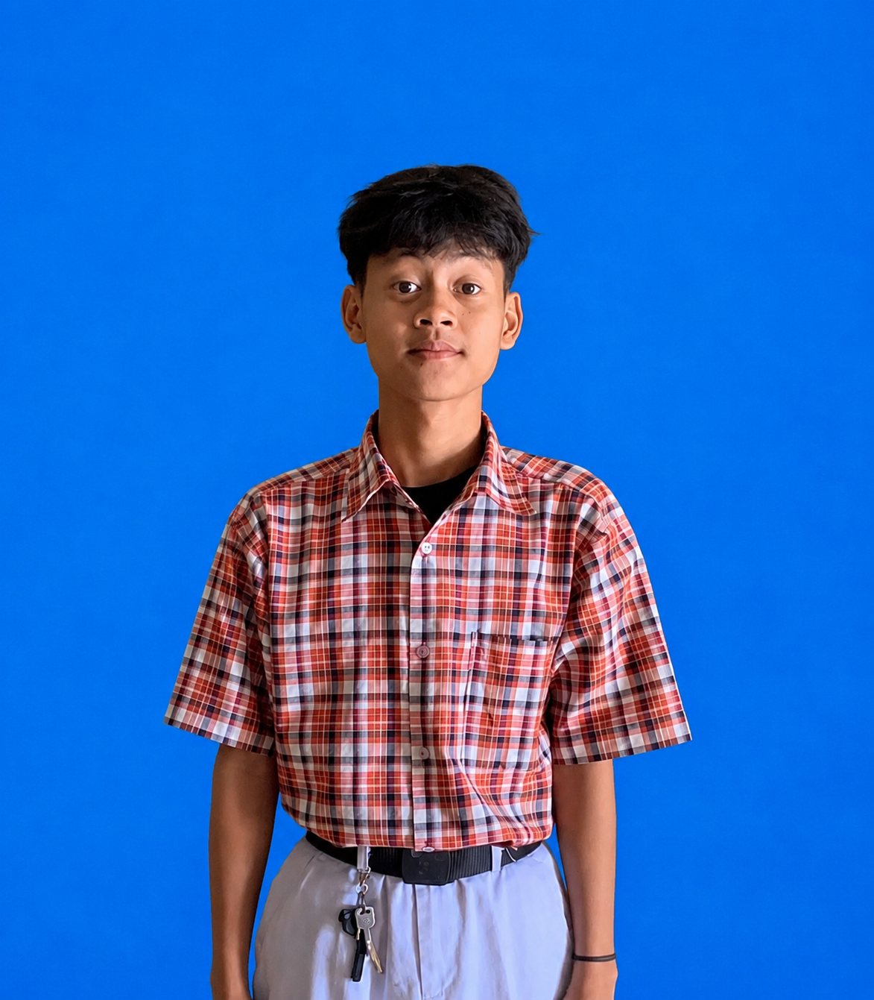

Get to know the person behind the code
I am a passionate developer based in Indonesia with over 5 years of experience in building digital products. I don't just write code; I solve problems. My journey started from curiosity — how websites work, how data moves, and how to turn ideas into interactive experiences.
My philosophy is simple: Design should feel real, and code should be clean. I specialize in the JavaScript ecosystem, creating seamless experiences from database to pixel. I believe that great software is built with empathy — understanding the user's needs and translating them into elegant solutions.
Beyond coding, I'm deeply interested in how technology can empower people. Whether it's building an e-commerce platform that helps small businesses grow, or an AI assistant that makes daily tasks easier — I want to create things that truly matter.
I started my coding journey at the age of 12, tinkering with HTML and CSS on a dusty old laptop. What began as a hobby quickly turned into a passion. Over the years, I've explored various technologies — from vanilla JavaScript to modern frameworks like React and Vue, and from simple scripts to full-fledged backend systems with Node.js and Python.
I believe in learning by building. Every project I take on is an opportunity to learn something new — whether it's a new design pattern, a better way to structure code, or a deeper understanding of how users interact with digital products.
Right now, I'm diving deeper into the world of Artificial Intelligence and automation. I'm exploring how to integrate AI models into web applications, building intelligent chatbots, and learning about natural language processing. I'm also studying cloud architecture and serverless computing to build more scalable and resilient systems.
I'm also expanding my knowledge in DevOps practices — containerization with Docker, CI/CD pipelines, and infrastructure as code. I want to not only build great software but also deploy and maintain it effectively.
When I'm not coding, I love reading books — especially about technology, psychology, and personal growth. I'm also passionate about photography and capturing the beauty of everyday moments. I enjoy playing music, exploring nature, and spending time with friends and family.
I strongly believe that being a good developer means being a well-rounded person. The best ideas often come when you step away from the screen and experience the world around you. That's why I always make time for hobbies and human connections.
I want to become a developer who not only builds great products but also inspires others. I dream of creating technology that is accessible, inclusive, and truly beneficial to society. I believe that the future of tech lies in human-centered design — where machines serve people, not the other way around.
In the next 5 years, I aim to lead impactful projects, mentor young developers, and contribute to open-source communities. I want to bridge the gap between complex technology and everyday users — making the digital world more intuitive and welcoming for everyone.
I approach every project with curiosity, discipline, and a relentless pursuit of quality. I believe that great work comes from continuous iteration — writing, testing, refining, and rewriting until it feels right. I'm not afraid of failure; I see it as a stepping stone toward mastery.
Every step shaped who I am today
Tools and technologies I master
What drives me forward
Saya ingin terus berkembang di dunia teknologi dengan memperdalam kemampuan dalam pemrograman dan pengembangan website. Ke depannya, saya ingin mampu membuat berbagai project yang lebih besar, mempelajari AI dan automation, memahami server serta teknologi cloud, dan menciptakan karya yang tidak hanya menarik secara tampilan tetapi juga bermanfaat bagi banyak orang. Saya juga ingin terus mencoba hal-hal baru, mendapatkan lebih banyak pengalaman, dan menjadi seseorang yang mampu mengubah ide menjadi sesuatu yang nyata.
Kind words from clients and colleagues
"Satria delivered our e-commerce platform on time with clean code and great UI. He truly understands user experience."
"Working with Satria was a breeze. He solved complex backend issues and communicated clearly throughout the project."
"His attention to detail and passion for learning is inspiring. He built our AI chatbot with minimal supervision."
Alat dan platform yang saya gunakan dalam setiap proyek
Beberapa proyek yang sudah saya buat
Bagaimana saya menjalani proses berkarya
Saya percaya bahwa setiap orang memiliki prosesnya masing-masing. Tidak harus selalu menjadi yang tercepat, yang terpenting adalah terus melangkah dan tidak berhenti belajar. Bagi saya, kegagalan dan kesalahan bukanlah akhir, melainkan bagian dari proses untuk menjadi lebih baik.
Saya tidak ingin hanya menjadi seseorang yang bisa menggunakan teknologi, tetapi juga seseorang yang mampu memahami, menciptakan, dan memberikan manfaat melalui teknologi. Setiap project yang saya kerjakan adalah kesempatan untuk belajar sesuatu yang baru dan berkembang dari sebelumnya.
Sebuah ucapan dari hati
Semoga apa yang saya bagikan dapat memberi inspirasi dan manfaat bagi Anda. Setiap kata yang saya tulis adalah cerminan dari perjalanan, pembelajaran, dan harapan saya untuk masa depan. Mari terus belajar, berkarya, dan menjadi pribadi yang lebih baik.
— Satria Putra Syawal